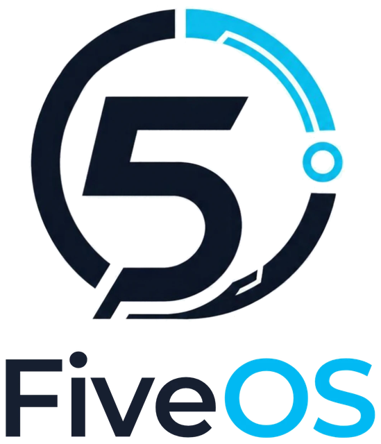

Installer
Only names and passwords
The installer asks for the server name, your license key and the database users. Everything else is installed and configured automatically.


Boot the ISO, answer a few questions, and get a ready-to-use FiveM server with FXServer, MariaDB and phpMyAdmin — preconfigured, secured and managed with one command.
The installer asks for the server name, your license key and the database users. Everything else is installed and configured automatically.
The current recommended FXServer build is downloaded on first boot, with the default resources and oxmysql. It runs as a system service and restarts on crashes.
Database, users and the mysql_connection_string are created for you. phpMyAdmin is ready in the browser, including its configuration storage.
Start, stop, live console, logs, FXServer updates with rollback, resources from Git, backups and firewall — all through fiveos.
Firewall with only SSH, web and FiveM open, no root login, the database only reachable locally, and passwords deleted after the setup.
Built on Debian 13 “trixie” without desktop or extras — only what a FiveM server needs. Security updates come straight from Debian.
Get the latest fiveos-0.1.0-amd64.iso. Optionally verify it with the SHA-256 checksum.
VirtualBox: type Linux / Debian (64-bit), 2+ CPUs, 4 GB RAM, 30 GB disk, network Bridged Adapter, and turn off Unattended installation.
Real server / PC: write the ISO to a USB stick with Rufus or balenaEtcher and boot from it.
Choose Install and fill in:
Get a license key at portal.cfx.re — you can also add it later. The chosen disk is erased after you confirm.
After the reboot FiveOS downloads FXServer and sets up the database, phpMyAdmin and the firewall. This needs internet and takes a few minutes. The login screen then shows the IP address.
In FiveM press F8 and type connect <server-ip>:30120. On the server, fiveos status shows everything at a glance.
fiveos statusState, IP, build and connect addresssudo fiveos startStart / stop / restart the serversudo fiveos consoleLive server console (leave: Ctrl+B, D)fiveos logs -fFollow the server logsudo fiveos update latestInstall another FXServer buildsudo fiveos rollbackBack to the previous buildsudo fiveos config license <key>Set the Cfx.re license keysudo fiveos config hostname "My Server"Set the server namesudo fiveos config maxclients 64Set the player slotssudo fiveos resource add <git-url>Install a resource from Git or a .zipfiveos resource listList resourcesfiveos db infoDatabase, users, connectionsudo fiveos backupBack up server files and databasesudo fiveos firewall allow 40120/tcpOpen a portsudo fiveos setupRetry the setup if the first boot failedYes. FiveOS is open source under the MIT license. You can use, change and share it.
No. FXServer belongs to Cfx.re and is downloaded from the official servers during setup. This keeps FiveOS legal to distribute and always gives you a current build.
Yes, every FiveM server needs one. Create it for free at portal.cfx.re. You can enter it during installation or later with sudo fiveos config license <key>.
A 64-bit x86 machine (Intel/AMD) or VM with at least 2 CPU cores, 4 GB RAM and 30 GB disk. More players and resources need more RAM and CPU.
No. FXServer is only available for x86_64, so FiveOS is too.
Yes. The database and oxmysql are already set up. Install your framework's resources with fiveos resource add or copy them to /opt/fivem/server-data/resources (for example via SFTP) and import their SQL files with phpMyAdmin.
FiveOS runs FXServer directly with its own management command. Optional txAdmin support is planned.
No. FiveOS is an independent community project. By running a FiveM server you agree to the Cfx.re terms.